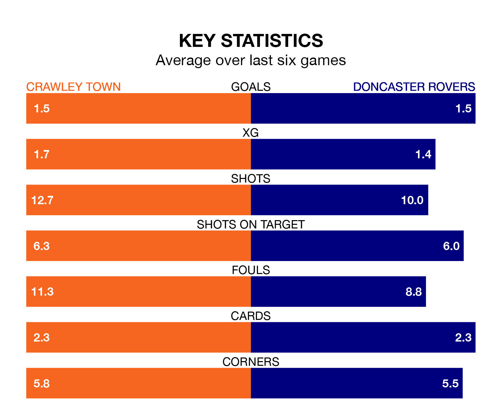

Doncaster Rovers visit Crawley Town at the Broadfield Stadium on Friday on the back of three consecutive wins in EFL League Two.
Doncaster have picked up 13 points from their last six games, and they face a Red Devils side who also won their last match, and have collected the same number of points from the last possible 18.
In the last 10 years, Crawley and Doncaster have played each other on seven occasions. Doncaster won three of them and they drew four times.
On average, the Red Devils scored 0.4 goals and the Rovers 1.9 in those matches.
Their last meeting was on October 3, when Doncaster won 2-0 at home.
With 51 goals in 38 games so far this season, Doncaster are scoring at below the league average rate with 1.3 goals per game. And they are conceding more than average, letting in 62 goals at a rate of 1.6 per game.
Crawley, meanwhile, are average scorers, with 1.5 goals per game. They have conceded 1.4 goals per game.
Town are seventh in the table after 38 games, of which they have won 18 and drawn five, earning 59 points.
Rovers are 11 places behind the Red Devils in 18th, with 14 wins and seven draws putting them on 49 points.
In Danilo Orsi-Dadamo, the hosts have one of the league's most on-form strikers so far this season. He has notched 16 goals in 37 appearances, to sit seventh in the scoring charts.
His goal rate of one every 203 minutes is slightly quicker than that of Joe Ironside, the Rovers' top scorer with a goal every 219 minutes, and a total of 14 goals in 37 games.
Crawley's last match was on Saturday, a 3-1 win against Tranmere Rovers, with Jay Williams, Jeremy Kelley and Orsi-Dadamo getting the goals for the Red Devils.
Doncaster beat Forest Green Rovers 2-0 last time out, also on Saturday, with Luke Molyneux and Richard Keogh (own goal) on the scoresheet.
Updated: 12:16 (UTC), 25/03/24